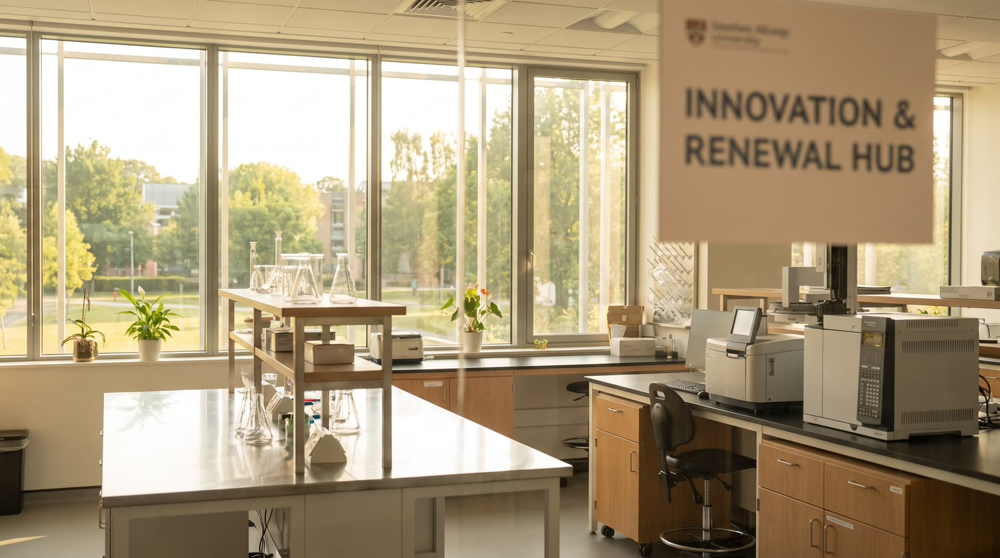

مستقبل المختبر السوري: كيف نبني قدرةً تشخيصيةً تدومThe future of the Syrian lab: building diagnostic capacity that lasts
بعد سنواتٍ من الاضطراب، يعيد المختبر السوري بناء نفسه. الفرصة ليست في استيراد الأحدث، بل في بناء نظامٍ يصمد: أجهزةٌ مناسبة، فرقٌ مدرّبة، وبياناتٌ موثوقة.After years of disruption, the Syrian laboratory is rebuilding itself. The opportunity is not to import the newest equipment, but to build a system that lasts: appropriate instruments, trained teams, and trustworthy data.

أبرز النقاطKey takeaways
- المختبرات لا تفشل لأن أجهزتها قديمة، بل لأن النظام حولها هش.Labs fail not because instruments are old, but because the system around them is fragile.
- ابدأ بالمناسب للسياق، لا بالأحدث.Start with what fits the context, not the newest.
- التعليم هو الاستثمار الأطول عمراً.Education is the longest-lasting investment.
من السهل التركيز على شراء أجهزةٍ جديدة. لكن المختبرات لا تفشل عادةً لأن أجهزتها قديمة، بل لأن الكاشف نفد، أو المعايرة أُهملت، أو لا أحد دُرّب على قراءة إنذار الجودة. القدرة التشخيصية نظامٌ متكامل، لا صندوقٌ لامع.It is easy to focus on buying new machines. But laboratories rarely fail because their instruments are old; they fail because the reagent ran out, the calibration was skipped, or nobody was trained to read a quality alarm. Diagnostic capacity is a whole system, not a shiny box.
ابدأ بالمناسب، لا بالأحدثStart with the appropriate, not the newest
الجهاز المناسب للسياق السوري هو الذي يعمل رغم انقطاع الكهرباء، وتتوفّر كواشفه محلياً، ويستطيع فريقٌ متوسط الخبرة تشغيله. هذه المعايير تسبق أي مواصفةٍ تقنية. استيراد أحدث جهازٍ في العالم دون كاشفٍ أو دعمٍ محلي هو شراء مشكلةٍ باهظة.The instrument appropriate to the Syrian context works despite power cuts, has locally available reagents, and can be run by a moderately experienced team. These criteria come before any technical spec. Importing the world's newest analyzer with no reagent or local support is buying an expensive problem.
الجودة عادةٌ يوميةQuality is a daily habit
ضبط الجودة ليس ملفاً للتفتيش، بل عادةٌ تحمي كل مريض. مختبرٌ يشغّل شواهده يومياً ويقرأ مخططاته يكتشف الخطأ قبل أن يصل إلى نتيجة. وهذه العادة تُبنى بالتدريب لا بالأوامر.Quality control is not a file for the inspector; it is a habit that protects every patient. A lab that runs its controls daily and reads its charts catches error before it becomes a result. That habit is built through training, not decrees.
القدرة التي لا تُقاس لا تتحسّن. ابدأ بتسجيل ما تفعله يومياً: حرارة الثلاجة، نتائج الشواهد، أعطال الأجهزة. البيانات البسيطة هي بداية كل تحسين.Capacity you do not measure does not improve. Start by recording what you do daily: fridge temperature, control results, instrument faults. Simple data is the start of every improvement.
البيانات التي لا تُكتب يدوياًData that is not written by hand
كل نتيجةٍ تُنسخ يدوياً فرصةٌ لخطأ. ربط الأجهزة بنظام معلومات المختبر يحوّل النتائج إلى بياناتٍ موثوقةٍ قابلةٍ للتدقيق والتحليل، ويحرّر الفريق للعمل الأهم. وهنا تلتقي الخبرة السورية مع تقنية POCTIFY.Every result copied by hand is a chance for error. Connecting instruments to a laboratory information system turns results into trustworthy, auditable, analysable data, and frees the team for the work that matters. This is where Syrian experience meets POCTIFY technology.
لماذا نبني الأكاديمية مجاناًWhy we build the academy for free
الاستثمار في تدريب أخصائيي المختبر، بلغتهم، هو ما يجعل كل استثمارٍ آخر يؤتي ثماره. جهازٌ جيدٌ بيد فريقٍ مدرّب يتفوّق على جهازٍ ممتازٍ بيد فريقٍ متروك. لهذا نضع التعليم في قلب لاب سوريا، لا على هامشها.Investing in the training of laboratory scientists, in their own language, is what makes every other investment pay off. A good analyzer in trained hands outperforms an excellent one in neglected hands. This is why we put education at the heart of LabSyria, not at its margin.
للمزيدKeep reading
تعلّم هذا الموضوع بعمق في أكاديمية لاب سوريا المجانية.Learn this in depth in the free LabSyria academy.
إلى الأكاديميةGo to the academy